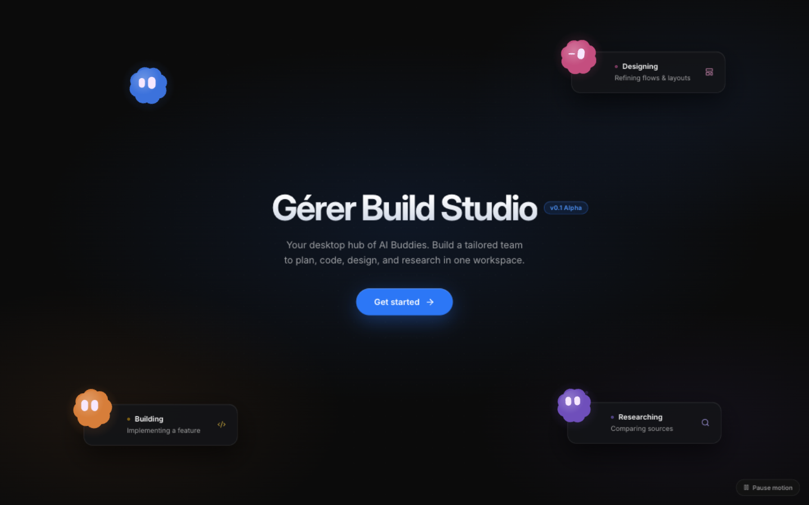

Build your team
Set each Buddy’s role and model, then bring the right specialists into a room.
Desktop workspace for AI teams
Give your AI Buddies distinct roles, bring them together in rooms, and keep the work moving with shared tasks, files, and live previews.
Explore the internal alpha
Set each Buddy’s role and model, then bring the right specialists into a room.
Track next steps on the Task Board, schedule recurring work, and open files and sites in Studio Preview.
Connect Edits for video projects and Affinity for graphics, photos, and layouts.
Apple silicon · macOS
Available to testers with access to the private GitHub repository. The build is development-signed and unnotarized, so Gatekeeper may block it.